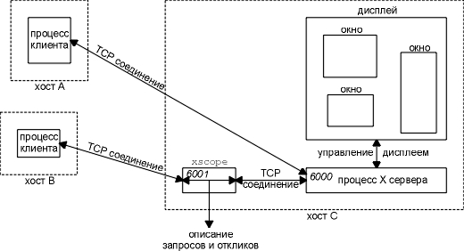

Глава 30 Другие приложения TCP/IP
В этой главе мы опишем приложения TCP/IP, которые присутствуют почти во всех реализациях. Некоторые из них просты и их можно описать целиком (Finger и Whois), тогда как другие достаточно сложны (X Window System). Сложные приложения мы рассмотрим, не вдаваясь в подробности, фокусируя свое внимание на то, как они используют протоколы TCP/IP.
В дополнение, мы приведем обзор некоторых средств Internet, которые позволяют определить ресурсы. Это средства, которые помогают нам ориентироваться в Internet, искать отдельные пункты, точное положение которых и точные имена которых не известны.
Протокол Finger возвращает информацию об одном или нескольких пользователях на указанном хосте. Это приложение обычно используется, для того чтобы посмотреть, находится ли конкретный пользователь в настоящее время в системе, или чтобы получить имя какого-либо пользователя, чтобы послать ему почту. RFC 1288 [Zimmerman 1991] описывает этот протокол.
Многие узлы не запускают Finger сервер по двум причинам. Во-первых, ошибки в программировании в ранних версиях сервера были одной из точек входа "червяка" в Internet в 1988 году. (RFC 1135 [Reynolds 1989] и [Curry 1992] описывают этого "червяка" более подробно.) Во-вторых, протокол Finger может предоставить подробную информацию о пользователях (login имя, телефонные номера, время последнего логирования и так далее), а эту информацию большинство администраторов считают частной. Раздел 3 RFC 1288 детально описывает аспекты секретности, соответствующие сервису Finger.
Сервер Finger использует заранее известный порт 79. Клиент осуществляет активное открытие на этот порт и отправляет запрос длиной в 1 строку. Сервер обрабатывает запрос, посылает назад вывод и закрывает соединение. Запрос и отклик в формате NVT ASCII, почти так же как мы видели в случае FTP и SMTP.
Обычно большинство пользователей Unix получают доступ к серверу Finger с использованием клиента finger(1), однако мы воспользуемся Telnet клиентом, подсоединимся непосредственно к серверу и рассмотрим команды, которые выдаются клиентом (команды длиной в 1 строку). Если запрос клиента состоит из пустой строки (которая в NVT ASCII передается как CR, за которой следует LF), это воспринимается как запрос на информацию о всех текущих пользователях.
sun % telnet slip finger
первые
три строки - вывод Telnet клиента
Trying 140.252.13.65 ...
Connected to slip.
Escape character is '^]'.
здесь
вводим RETURN в качестве команды клиента Finger
Login Name
Tty
Idle Login Time Office
Office Phone
rstevens Richard Stevens *c0 45
Jul 31 09:13
rstevens Richard Stevens *c2 45
Aug 5 09:41
Connection closed by foreign host.
вывод Telnet
клиента
Пустые поля с названием офиса и рабочего телефона взяты из необязательных полей в файле пользовательских паролей (которые в данном случае отсутствуют).
Сервер на своей стороне осуществляет активное закрытие, при этом сервер возвращает переменное количество информации, а получение клиентом метки конца файла оповещает клиента о том, что вывод завершен.
Когда в запросе клиента содержится имя пользователя, сервер выдает информацию только об этом пользователе. Здесь приведен еще один пример, вывод Telnet клиента удален:
sun % telnet vangogh.cs.berkeley.edu finger
rstevens
это
клиент, о котором мы хотим узнать
Login: rstevens
Name:
Richard Stevens
Directory: /a/guest/rstevens
Shell:
/bin/csh
Last login Thu Aug 5 09:55 (PDT) on ttyq2 from sun.tuc.noao.edu
Mail forwarded to: rstevens@noao.edu
No Plan.
Когда Finger сервис отключен, клиент, в ответ на активное открытие, получает от сервера RST, так как никакой из процессов не осуществил пассивное открытие на порт 79:
sun % finger @svr4
[svr4.tuc.noao.edu] connect: Connection refused
Некоторые узлы предоставляют определенный сервис на порт 79, однако они просто сообщают информацию, не обращая внимание на клиентские запросы:
sun % finger @att.com
[att.com]
это
строка вывода от Finger клиента; все остальное от
сервера
------------------------------------------------------------
There are no user accounts on the AT&T Internet gateway.
To send email to an AT&T employee, send email to their name
separated by periods at att.com. If the employee has an email
address registered in the employee database, they will receive
email - otherwise, you'll receive a non-delivery notice.
For example: John.Q.Public@att.com1
sun % finger clinton@whitehouse.gov
[whitehouse.gov]
Finger service for arbitrary addresses on whitehouse.gov is not
supported. If you wish to send electronic mail, valid addresses are
"PRESIDENT@WHITEHOUSE.GOV", and "VICE-PRESIDENT@WHITEHOUSE.GOV"2.
Существует возможность организовать брандмауэр (firewall gateway). Маршрутизатор между организацией и Internet, который фильтрует конкретные IP датаграммы. ([Cheswick and Bellovin 1994] описывает брандмауэры более подробно.) Брандмауэр может быть сконфигурирован таким образом, чтобы отбрасывать входящие датаграммы, которые содержат TCP сегменты на порт 79. В этом случае Finger клиент прекратит работу по тайм-ауту примерно через 75 секунд.
У Finger сервера и Unix клиента finger существуют набор опций. Обратитесь к RFC 1288 и к страницам помощи по finger(1) за более подробной информацией.
RFC 1288 заявляет, что машины с TCP/IP соединениями, которые предоставляют сервер Finger, должны отвечать на запрос клиента содержащий пустую строку, списком всех пунктов, доступных в настоящий момент. Они должны отвечать на запрос клиента содержащий имя, счетчиком или списком доступных пунктов для этого продукта.
Протокол Whois
Протокол Whois это еще один информационный сервис. Несмотря на то, что любой узел может предоставить Whois сервис, наиболее широко используется InterNIC, rs.internic.net. Этот сервер содержит информацию о всех зарегистрированных DNS доменах и о большинстве системных администраторов, которые ответственны за системы, подключенные к Internet. (Еще один подобный сервер nic.ddn.mil содержит информацию о сети MILNET.) К сожалению, не всегда предоставляется полная информация. RFC 954 [Harrenstein, Stahl, and Feinler 1985] документирует сервис Whois.
С точки зрения протокола, сервер Whois работает с заранее известным портом TCP 43. Он принимает от клиента запрос на соединение, после чего клиент отправляет на сервер запрос длиной в 1 строку. Сервер выдает информацию и закрывает соединение. Запросы и отклики передаются в формате NVT ASCII. Он практически идентичен серверу Finger, за исключением того, что запросы и отклики содержат разную информацию.
Широко используемый Unix клиент - программа whois(1) , однако можно использовать Telnet и ввести команды самостоятельно. Сначала отправляется запрос, содержащий знак вопроса, на что возвращается более подробная информация о поддерживаемых запросах клиента.
Когда NIC было переименовано в InterNIC в 1993 году, узел для сервера Whois переместился с nic.ddn.mil на rs.internic.net. Многие производители все еще поставляют версии клиента whois с именем nic.ddn.mil, встроенном вовнутрь. Вам может потребоваться указать аргумент командной строки -h rs.internic.net, чтобы подсоединиться к нужному серверу.
Другой способ - использовать Telnet, чтобы подсоединиться к rs.internic.net с именем whois.
Воспользуемся Whois сервером, чтобы получить информацию об авторе. (Весь вывод Telnet клиента удален.) Первый запрос - поиск всех имен, совпадающих с шаблоном "stevens."
sun % telnet rs.internic.net whois
stevens
это
командная строка, которую мы ввели клиенту
информация
о 25 других "стивенсах", которую мы
игнорировали
Stevens, W. Richard (WRS28) stevens@kohala.com
+1 602 297 9416
The InterNIC Registration Services Host ONLY contains Internet
Information (Networks, ASN's, Domains, and POC's).
Please use the whois server at nic.ddn.mil for MILNET Information.
Три заглавные буквы, которые стоят перед цифрами в скобках после имени, (WRS28), это персональный описатель NIC. Следующий запрос содержит восклицательный знак и описатель NIC, что позволяет получить более подробную информацию об этом человеке.
sun % telnet rs.internic.net whois
!wrs28
запрос
клиента
Stevens, W. Richard (WRS28) stevens@kohala.com
Kohala Software
1202 E. Paseo del Zorro
Tuscon, AZ 85718
+1 602 297 9416
Record last updated on 11-Jan-91.
Также можно получить дополнительную информацию о переменных Internet. Например, запрос net 140.252 возвращает информацию о сети класса B 140.252.
С использованием команды VRFY в SMTP, вместе с протоколом Finger и протоколом Whois можно определить положение пользователей в Internet. Это напоминает использование белых страниц в телефонной книге, когда необходимо найти чей-нибудь телефонный номер. В настоящее время существуют широко доступные средства, однако проводятся исследования, призванные улучшить этот тип сервиса.
[Schwartz and Tsirigotis 1991] приводит дополнительную информацию о различных сервисах белых страниц, которые появляются в Internet. Один из них Netfind; к нему можно получить доступ по Telnet на хосте bruno.cs.colorado.edu или ds.internic.net (имя пользователя netfind).
RFC 1309 [Weider, Reynolds, and Heker 1992] предоставляет краткое описание службы директорий OSI, которая называется X.500, где приводится сравнение отличие с текущими технологиями Internet (Finger и Whois).
Archie, WAIS, Gopher, Veronica и WWW
Средства, которые мы описали в двух предыдущих разделах, - Finger, Whois и сервис белых страниц предоставляют информацию о местонахождении персон. Существуют другие средства, которые позволяют находить файлы и документы. В следующем разделе дается краткое описание этих средств. Мы приводим только краткое описание, потому что рассмотрение в деталях каждого из них может занять целую книгу. Новые программы разрабатываются постоянно. [Obraczka, Danzig, and Li 1993] описывает сервисы поиска ресурсов в Internet.
Многое из того, что показано этой книге, было получено с использованием анонимного FTP. Проблема заключается в том, чтобы найти FTP узел, на котором находится необходимая программа. Иногда мы даже не знаем точное имя файла, однако знаем какое-либо ключевое слово, которое может появиться в имени файла.
Archie предоставляет информацию о тысячах FTP серверов на бескрайних просторах Internet. Мы можем получить доступ к этой информации, зайдя на сервер Archie и осуществив поиск файла, имя которого содержит указанное регулярное выражение. В ответ появится список серверов, для которых было найдено совпадение с именами файлов. Затем мы используем анонимный FTP, чтобы получить файл.
Существует много Archie серверов по всему миру. Стартовая точка - Telnet заход на ds.internic.net, под именем archie и исполнение команды servers. При этом будет возвращен список всех Archie серверов и их положений.
WAIS: информационные сервисы глобальных сетей
Archie помогает найти положение имен файлов, содержащих ключевые слова, однако иногда приходится искать файл или базу данных, ключевое слово в которой содержится внутри. Таким образом, осуществляется поиск файла, содержащего ключевое слово, а не имени файла, содержащего ключевое слово.
WAIS знает о сотнях баз данных, которые содержат информацию по темам, связанным с компьютерами, и другим общим темам. Чтобы использовать WAIS, мы выбираем базы данных для поиска и указываем ключевые слова. Чтобы попробовать WAIS, попробуйте подсоединиться Telnetом к quake.think.com с именем пользователя wais.
Gopher это меню-ориентированное приложение для работы с разнообразными сервисами Internet, таких как Archie, WAIS и анонимный FTP. Gopher это одно из наиболее легко используемых средств, так как его пользовательский интерфейс не зависит от того, какой сервис используется.
Чтобы воспользоваться Gopher, подсоединитесь Telnetом к is.internic.net с именем пользователя gopher.
Veronica: Very Easy Rodent-Oriented Netwide Index to Computerized Archives
Тогда как Archie это индекс анонимных FTP серверов, Veronica это индекс заголовков пунктов Gopher. Veronica обычно осуществляет поиск по сотням Gopher серверов.
Чтобы получить доступ к Veronica, необходимо воспользоваться клиентом Gopher. Выберите пункт меню в Gopher "Beyond InterNIC: Virtual Treasures of the Internet", а затем выберите Veronica из следующего меню.
World Wide Web позволяет нам просмотреть в мировом масштабе большой набор сервисов и документов с использованием средства, которое называется гипертекст (hypertext). По мере того как информация отображается, определенные ключевые слова подсвечиваются, и мы можем получить более подробную информацию с использованием этих ключевых слов.
Чтобы получить доступ к WWW, подсоединитесь Telnetом к info.cern.ch.
X Window System, или просто X, это приложение клиент-сервер, которое позволяет нескольким клиентам (приложениям) использовать графический дисплей, управляемый сервером. Сервер это программное обеспечение, которое управляет дисплеем, клавиатурой и мышкой. Клиент это программа приложения, которая запущена либо на том же самом хосте, что и сервер, либо на другом хосте. В последнем случае обычная форма связи между клиентом и сервером это TCP, однако могут быть использованы и другие протоколы, такие как DECNET. В некоторых случаях сервер это часть аппаратного обеспечения (X терминал), которая общается с клиентом на другом хосте. В другом случае отдельно стоящая рабочая станция, клиент и сервер находятся на одном и том же хосте и общаются с помощью коммуникаций между процессами на этом хосте, без использования сетевого обеспечения. Однако наиболее стандартная ситуация, когда клиенты запущены на том же хосте, что сервер, или когда клиенты запущены на других хостах.
X требует надежный, двунаправленный потоковый протокол, такой как TCP. (X не разработана для работы с ненадежными протоколами, такими как UDP.) Общение между клиентом и сервером осуществляется посредством обмена 8-битовыми байтами по этому соединению. [Nye 1992] приводит формат более чем 150 сообщений, которыми обмениваются клиент и сервер по TCP соединению.
В Unix системах, когда X клиент и X сервер находятся на одном и том же хосте, вместо TCP обычно используются протоколы Unix domain, потому что в этом случае осуществляется меньше обработки протоколов, нежели при использовании с TCP. Протоколы Unix domain это форма общения между процессами, которая может быть использована между клиентами и серверами на одном и том же хосте. Обратитесь к рисунку 2.4, на котором видно, что когда TCP используется для общения между двумя процессами на одном и том же хосте, эти данные передаются по петле ниже IP уровня, при этом осуществляется обработка данных и TCP, и UDP. На рисунке 30.1 показан возможный вариант общения трех клиентов, использующих один дисплей. Один клиент на том же самом хосте, что и сервер, использует Unix domain протоколы. Остальные два клиента находятся на других хостах и используют TCP. Один клиент это обычно оконный менеджер (window manager), который имеет право располагать окна на дисплее. Оконный менеджер позволяет нам передвигать окна по экрану или, например, менять их размер.
На первый взгляд термины клиент и сервер не совсем уместны в данном случае. С такими приложениями как Telnet и FTP мы считаем, что клиент это интерактивный пользователь, который сидит за клавиатурой и дисплеем. Однако в случае X клавиатура и дисплей принадлежат самому серверу. Поэтому в данном случае сервер это то, что предоставляет сервис. Сервис, предоставляемый X, это доступ к окну, клавиатуре и мышке. В случае Telnet сервис это терминальный заход на удаленный хост. В случае FTP сервис это файловая система сервера.
X сервер обычно стартует, когда X терминал или рабочая станция загружаются. Сервер создает конечную точку TCP и осуществляет пассивное открытие на порт 6000 + n, где n это номер дисплея (обычно 0).

Рисунок 30.1 Три X клиента, использующие один дисплей.
Большинство Unix серверов также создают Unix domain сокет с именем /tmp/.X11-unix/Xn, где n это тот же номер дисплея.
Когда клиент стартует на другом хосте, он создает TCP конечную точку и осуществляет активное открытие на порт 6000 + n сервера. Каждый клиент имеет свое собственное TCP соединение с сервером. Уже от сервера будет зависеть, как он поделит ресурсы между всеми клиентами. Клиент отправляет по TCP соединению запросы на сервер (создает окно), сервер посылает обратно отклики, а также сервер посылает события клиенту (нажатие кнопки мыши, нажатие клавиш на клавиатуре, перемещение окна, изменение размера окна и так далее).
На рисунке 30.2 повторен рисунок 30.1, где показаны фазы общения клиента с процессом X сервера, которые, в свою очередь, обслуживают окна на дисплее. Здесь не показано, как X сервер обслуживает клавиатуру и мышь.

Рисунок 30.2 Три клиента, использующие один дисплей.
Подобная форма, когда один сервер обрабатывает несколько клиентов, отличается от обычного TCP конкурентного сервера, который мы описали в разделе "Реализация TCP сервера" главы 18. FTP и Telnet серверы, например, запускают новый процесс каждый раз, когда приходит запрос на новое TCP соединение, поэтому каждый клиент общается со своим процессом сервера. В случае X, все клиенты, запущенные на этом же хосте или на другом хосте, общаются с одним сервером.
По TCP соединению между X клиентом и его сервером осуществляется обмен большим количеством данных. Количество данных зависит от конкретной реализации приложения. Например, если мы запустим клиента Xclock, который отображает текущее время и дату в окне клиента на сервере и укажем ему обновляться один раз в секунду, X сообщения посылаются по TCP соединению от клиента к серверу один раз в секунду. Если мы запустим эмулятор X терминала, Xterm, каждое нажатие клавиши будет генерировать 32-байтное X сообщение (72 байта вместе со стандартными IP и TCP заголовками), и еще больше X сообщений в обратном направлении с символами, отраженными эхом. [Droms and Dyksen 1990] рассчитывает TCP траффик между различными X клиентами и одним конкретным сервером.
Удобная программа, с помощью которой можно определить, чем обмениваются X клиент и его сервер, это Xscope. Она поставляется с большинством реализаций X Window. Программа находится между клиентом и сервером, пропуская все данные в обоих направлениях, при этом отлавливая все запросы клиента и отклики сервера. На рисунке 30.3 показано, как это происходит.

Рисунок 30.3 Использование xscope для мониторинга X соединения.
Во-первых, мы стартовали процесс xscope на том же самом хосте, где находится сервер, при этом xscope слушает запросы на TCP соединение приходящие на порт 6001, а не 6000. Затем мы стартовали клиента на другом хосте и указали дисплей номер 1, а не 0, таким образом, клиент подключается к xscope, а не непосредственно к серверу. Когда запрос на соединение прибывает от клиента, xscope создает TCP соединение на реальный порт сервера 6000 и копирует все между клиентом и сервером, а также предоставляет читаемое описание запросов и откликов. Мы запустим xscope на хосте sun, а клиента xclock на хосте svr4.
svr4 % DISPLAY=sun:1 xclock -digital -update 5
При этом отображаются время и дата в цифровом формате
Thu Sep 9 10:32:55 1993
в окне на хосте sun. Мы указали обновлять время один раз каждые 5 секунд.
Также указана опция -q команды xscope, чтобы получать минимальный вывод. Доступны различные уровни отладки, что позволяет просмотреть все поля в каждом сообщении. Следующий вывод показывает первые три запроса и отклика.
sun % xscope -q
0.00: Client --> 12 bytes
0.02:
152
bytes <-- X11 Server
0.03: Client --> 48 bytes
............REQUEST: CreateGC
............REQUEST: GetProperty
0.20: 396
bytes <-- X11 Server
..............REPLY:
GetProperty
0.30: Client --> 8 bytes
0.38: Client --> 20 bytes
............REQUEST: InternAtom
0.43:
32
bytes <-- X11 Server
..............REPLY:
InternAtom
Первое сообщение от клиента в момент времени 0,00 и отклик сервера в момент времени 0,02 это стандартное установление соединения между клиентом и сервером. Клиент указывает порядок следования байтов и версию сервера, которую он ожидает. Сервер сообщает о себе различную информацию.
Следующее сообщение в момент времени 0,03 содержит два запроса от клиента. Первый запрос создает на сервере графическое окружение, в котором клиент будет рисовать. Второй получает свойства от сервера (характеристика RESOURCE_MANAGER). Свойства обеспечивают общение между клиентами, обычно между приложением и оконным менеджером. Отклик от сервера размером 396 байт в момент времени 0,20 содержит это свойство.
Следующие два сообщения от клиента в моменты времени 0,30 и 0,38 имеют форму одного запроса, который требует вернуть атом. (Каждое свойство имеет уникальный целый идентификатор, который называется атом.) В момент времени 0.43 сервер отправляет отклик, содержащий атом.
Рассматривать этот пример дальше невозможно без подробного описания того, как работает система X window system, что не является целью нашего повествования. В этом примере мы видим, что перед тем как на дисплее появилось окно, клиент отправил 12 сегментов, содержащих 1668 байт, а сервер отправил 10 сегментов, содержащих 1120 байт. Весь процесс занял 3,17 секунды. С этого момента, каждые 5 секунд, клиент посылает маленький запрос в среднем по 44 байта, которые обновляют окно. Это продолжается до тех пор, пока клиент не будет выключен.
LBX: X с низкой шириной полосы
Кодирование, используемое протоколом X, оптимально для работы в локальных сетях, где время, которое тратится на кодирование и декодирование данных, более важно, нежели минимизация количества передаваемых данных. При работе с Ethernet все нормально, однако в случае медленных последовательных каналов, таких как SLIP и PPP (глава 2, разделы "SLIP: IP по последовательной линии" и "PPP: протокол точка-точка") возникают проблемы.
Поэтому был разработан стандарт Low Bandwidth X (LBX), который использует следующую технику для уменьшения сетевого траффика: кэширование, отправку изменений от предыдущих пакетов и сжатие. Спецификации появились в 1993 году с реализацией X window system Release 6.
Первые два приложения, которые мы рассмотрели, Finger и Whois, предназначены для получения информации о пользователях. Клиент Finger запрашивает сервер, чаще всего для того, чтобы найти какое-либо имя (например, чтобы отправить пользователю почту) или для того чтобы посмотреть, зашел ли кто-либо в систему терминалом в настоящий момент. Клиент Whois обычно общается с сервером, запущенным от InterNIC, в поисках информации о человеке, организации, домене или номере сети.
Другие сервисы, позволяющие более эффективно работать с ресурсами Internet, это Archie, WAIS, Gopher, Veronica и WWW. Они помогают найти в Internet файлы и документы. В настоящее время разрабатываются и другие средства определения ресурсов.
Эта глава закончена кратким рассмотрением системы X Window System, еще одного очень "серьезного" приложения, работающего с TCP/IP. Мы видели, что X сервер обслуживает несколько окон на дисплее и обеспечивает общение клиента с его окном. С помощью программы Xscope мы видели, как существует возможность поместить еще одну программу между клиентом и сервером, чтобы получить информацию о том, с помощью каких сообщений осуществляется обмен.
Упражнения